Exam weight Low
Design
- Mitch Kapor, the creator of Lotus 1-2-3, presented a “software design manifesto” in Dr. Dobbs Journal. He said:
- e. Good software design should exhibit:
- Firmness: A program should not have any bugs that inhibit its function.
- Commodity: A program should be suitable for the purposes for which it was intended.
- Delight: The experience of using the program should be pleasurable.
- e. Good software design should exhibit:
2
Exam weight ●○○ Low
Purpose of Design
- Design is where customer requirements, business needs, and technical considerations all come together in the formulation of a product or system
- The design model provides detail about the software data structures, architecture, interfaces, and components
- The design model can be assessed for quality and be improved before code is generated and tests are conducted
- Does the design contain errors, inconsistencies, or omissions?
- Are there better design alternatives?
- Can the design be implemented within the constraints, schedule, and cost that have been established?
3
Exam weight ●○○ Low
- Design translates requirements into a blueprint for construction; it is where quality is built in.
Software Design
- Encompasses the set of principles, concepts, and practices that lead to the development of a high quality system or product
- Software design practices change continuously as new methods, better analysis, and broader understanding evolve
4
Exam weight ●○○ Low
Software Engineering Design or From Analysis Model to Design Model
Each element of the analysis model provides information that is necessary to create the four design models
- The data/class design transforms analysis classes into design classes/ implementation classes along with the data structures required to implement the software.
- The architectural design defines the relationship between major structural elements of the software; architectural styles and design patterns help achieve the requirements defined for the system.
- The interface design defines how software elements, hardware elements, and end-users communicate
- The component-level design transforms structural elements of the software architecture into a procedural description of software components
5
Exam weight ●○○ Low
A possible step-by-step guide:
- Examine the information domain model and design appropriate data structures for data objects and their attributes
- Using the analysis model, Select an architectural style (and design patterns) that are appropriate.
- Partition the analysis model into design subsystems and allocate these subsystems within the architecture
- Design the subsystem interfaces
- Allocate analysis classes or functions to each subsystem
- Create a set of design classes or components
- Translate each analysis class description into a design class
- Check each design class against design criteria; consider inheritance issues
- Define methods associated with each design class
- Evaluate and select design patterns for a design class or subsystem
- Design any interface required with external systems or devices
- Design the user interface
- Conduct component-level design
- Specify all algorithms at a relatively low level of abstraction
- Refine the interface of each component
- Define component-level data structures
6
Exam weight ●○○ Low
Design and Quality
- The design must implement all of the explicit requirements contained in the analysis model, and it must accommodate all of the implicit requirements desired by the customer.
- The design must be a readable, understandable guide for those who generate code and for those who test and subsequently support the software.
- The design should provide a complete picture of the software, addressing the data, functional, and behavioral domains from an implementation perspective.
7
Exam weight ●○○ Low
Quality Guidelines
- A design should exhibit an architecture that (1) has been created using recognizable architectural styles or patterns, (2) is composed of components that exhibit good design characteristics and (3) can be implemented in an evolutionary fashion
- A design should be modular; that is, the software should be logically partitioned into elements or subsystems
- A design should contain distinct representations of data, architecture, interfaces, and components.
- A design should lead to data structures that are appropriate for the classes to be implemented and are drawn from recognizable data patterns.
8
Exam weight ●○○ Low
Quality Guidelines
- A design should lead to components that exhibit independent functional characteristics.
- A design should lead to interfaces that reduce the complexity of connections between components and with the external environment.
- A design should be derived using a repeatable method that is driven by information obtained during software requirements analysis.
- A design should be represented using a notation that effectively communicates its meaning.
9
Exam weight ●○○ Low
Design Principles
- The design should not suffer from tunnel vision
- The design should be traceable to the analysis model.
- The design should not reinvent the wheel. Software components should be designed in such a way that they can be effectively reused to increase the productivity.
- The design should minimize the “intellectual distance” between the software and the problem as it exists in the real world.
- The design should exhibit uniformity and integration
10
Exam weight ●○○ Low
- Principles: design should be traceable to requirements, not reinvent the wheel, minimize the gap with the problem, be uniform, accommodate change.
Design Principles
- The design should be structured to accommodate change.
- The design should be structured to degrade gently, even when aberrant data events or operating conditions are encountered.
- Design is not coding, coding is not design
- The design should be assessed for quality as it is being created, not after the fact.
- The design should be reviewed to minimize conceptual (semantic) errors of design such as ambiguousness and inconsistency are addressed in advance before dealing with the syntactical errors present in the design model.
11
Exam weight ●○○ Low
Design Principles
- Prototyping: Prototyping should be used when the requirements are not completely defined in the beginning. The user interacts with the developer to expand and refine the requirements as the development proceeds. Using prototyping, a quick 'mock-up' of the system can be developed. This mock-up can be used as an effective means to give the users a feel of what the system will look like and demonstrate functions that will be included in the developed system. Prototyping also helps in reducing risks of designing software that is not in accordance with the customer's requirements.
- Testing should be involved from the initial stages.
12
Exam weight ●○○ Low
Fundamental Concepts
- Abstraction: a fundamental concept to design is Abstraction. Abstraction means different level of description of the design
- Architecture—the overall structure of the software
- Patterns—”conveys the essence” of a proven design solution. Pattern means what already has been proven to be the best design solution for a particular problem.
- Refinement—elaboration of detail for all abstractions
- Aspect: An aspect of a program is a feature linked to many other parts of the program, but which is not related to its primary functions. An aspect crosscuts the program's core concerns. For example, logging code can crosscut many modules, yet the aspect of logging should be separate from the functional concerns of the module it cross-cuts. Isolating such aspects as logging and persistence from business logic is at the core of the aspect-oriented programming (AOP).
13
Exam weight ●○○ Low
- Fundamental concepts: abstraction, architecture, patterns, separation of concerns, modularity, information hiding, functional independence, refinement, refactoring.
Best practices
- Separation of c oncerns — any complex problem can be more easily handled if it is subdivided into pieces
- Modularity — group highly coupled data and functions into modules (or packages or libraries, etc.)
- Functional independence—single-minded function and low coupling
- Hiding — controlled interfaces. Don’t leave anything open to the external user
- Refactoring—a reorganization technique that simplifies the design
- OO Design Concepts (Polymorphism, Inheritance, Encapsulation, Abstraction) + SOLID design principles (Single responsibility principle, Open/Closed principle, Liskov’s substitution principle, Interface segregation principle, Dependency inversion principle)
14
Exam weight ●○○ Low
Architecture
“The overall structure of the software and the ways in which that structure provides conceptual integrity for a system.” [SHA95a] Software architecture refers to the structure of the system, which is composed of various components of a program/ system, the attributes (properties) of those components and the relationship amongst them. The software architecture enables the software engineers to analyze the software design efficiently.
Structural properties. This aspect of the architectural design representation defines the components of a system (e.g., modules, objects, filters) and the manner in which those components are packaged and interact with one another. For example, objects are packaged to encapsulate both data and the processing that manipulates the data and interact via the invocation of methods
15
Exam weight ●○○ Low
Architecture
- Extra-functional (non-functional) properties. The architectural design description should address how the architecture achieves requirements for performance, capacity, reliability, security, adaptability, and other system characteristics.
- Families of related systems. The architectural design should draw upon repeatable patterns that are commonly encountered in the design of families of similar systems. In essence, the design should have the ability to reuse architectural building blocks.
16
Exam weight ●○○ Low
Modularity
- Software should be divided into separately named and addressable components, called modules, that are integrated to satisfy problem requirements.
- In software engineering, modularity refers to the extent to which a software/web application is divided into small modules.
- modularity is the most important attribute of software that allows a program to be intellectually manageable.
17
Exam weight ●○○ Low
- Modularity: divide into modules. Too few = hard to understand; too many = integration cost. Aim for the minimum-cost region.
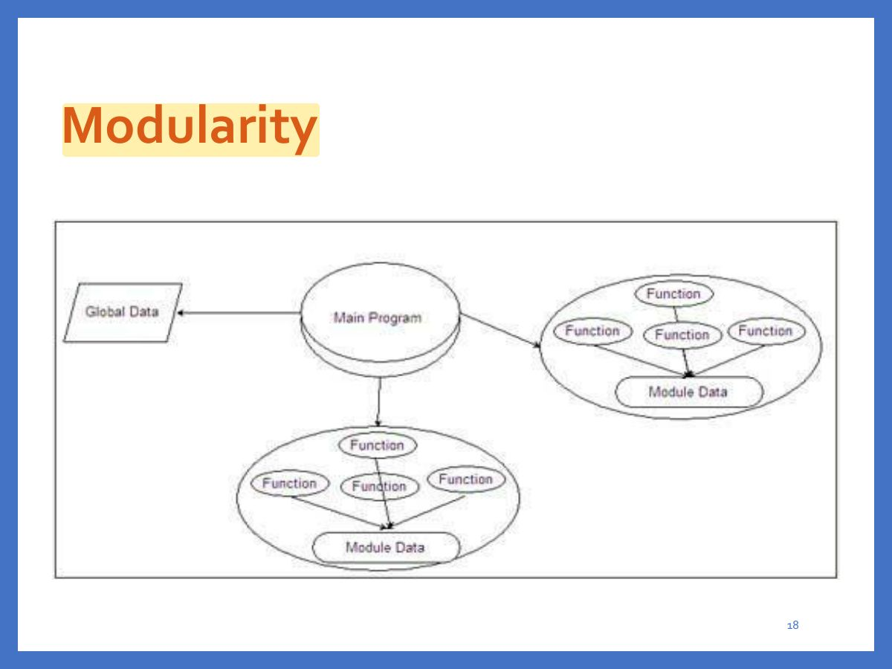
Exam weight ●○○ Low
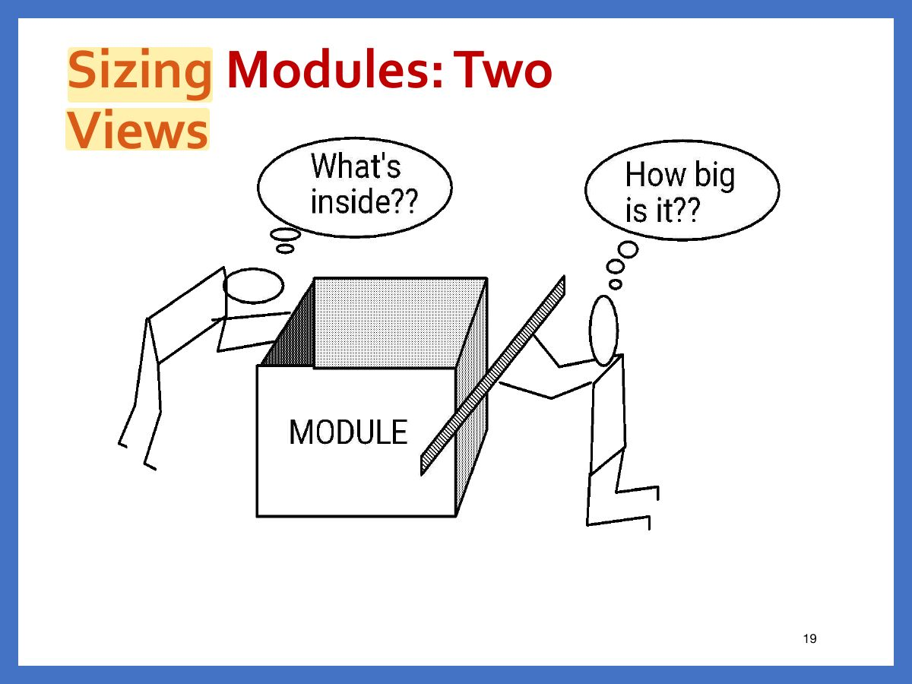
Exam weight ●○○ Low
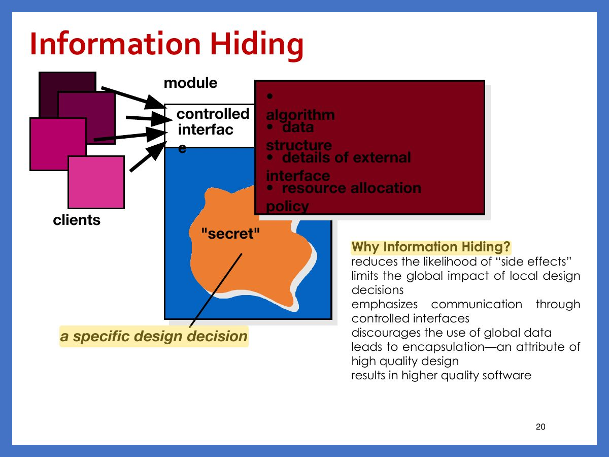
Exam weight ●○○ Low
- Information hiding: modules hide their internal details and expose only interfaces.
Stepwise Refinement
- Stepwise refinement is a top-down design strategy used for decomposing a system from a high level of abstraction into a more detailed level (lower level) of abstraction. A hierarchy is developed by decomposing a macroscopic statement of function (a procedural abstraction) step by step until programming language statements are reached.
- You begin with a statement of function (or description of information) that is defined at a high level of abstraction. That is, the statement describes function or information conceptually but provide no information about the internal workings of the function or the internal structure of the information. Then, you provide more and more details as each successive refinement occurs.
21
Exam weight ●○○ Low
- Stepwise refinement: top-down elaboration from high-level to detailed.
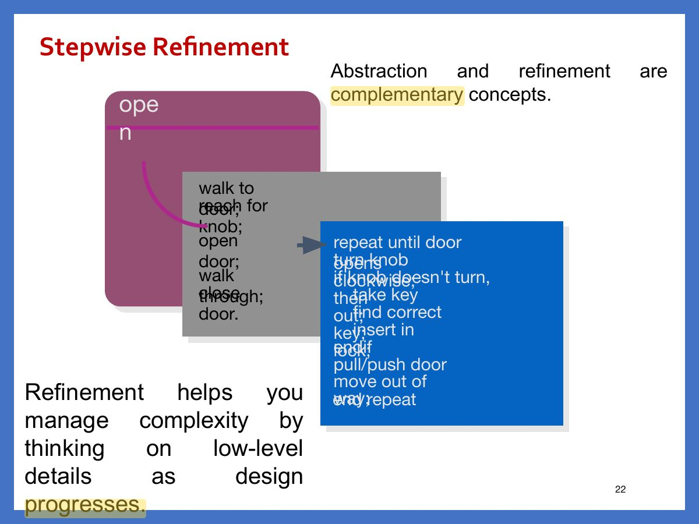
Exam weight ●○○ Low
Functional Independence
- Functional independence is achieved by developing modules with "single-minded" function with minimized interaction with other modules.
- Functional independence is a key to good design, and design is the key to software quality.
- Component independence leads to a good design, which is assessed using two criteria : Coupling and Cohesion
- Cohesion is an indication of the relative functional strength of a module.
- Cohesion is a natural extension of the information-hiding concept. A cohesive module performs a single task, requiring little interaction with other components in other parts of a program. Stated simply, a cohesive module should (ideally) do just one thing.
- Coupling is an indication of the relative interdependence among modules.
- Coupling depends on the interface complexity between modules, the point at which entry or reference is made to a module, and what data pass across the interface
23
Exam weight ●●● High
- Functional independence: HIGH cohesion (a module does one thing) and LOW coupling (few dependencies between modules).
Memory trickHigh cohesion, low coupling.
🎯 How this can come up · 1 question
MCQ
A good design aims for:
Correct: High cohesion and low coupling.
Functional Independence
- In software design, you should try to achieve high cohesion (i.e., single-mindedness) i.e. a single components focuses on a single task with the lowest possible coupling i.e. little interaction with other modules of the system.
- Cohesion is intra-module concept
- Coupling is inter-module concept.
- Simple connectivity among modules results in software that is easier to understand and less prone to a “ripple effect” , caused when errors occur at one location and propagate throughout a system.
24
Exam weight ●○○ Low
Architectural abstraction
- Architecture in the small is concerned with the architecture of individual programs. At this level, we are concerned with the way that an individual program is decomposed into components.
- Architecture in the large is concerned with the architecture of complex enterprise systems that include other systems, programs, and program components. These enterprise systems are distributed over different computers, which may be owned and managed by different companies. 30/04/2023
25
Exam weight ●○○ Low
Uses of Architectural Model
- As a way of highlighting early design decisions
- The architecture highlights early decisions that will have a profound impact on all software engineering work that follows.
- The architecture may be reusable across a range of systems
26
Exam weight ●○○ Low
Non-functional system Requirements dictate Architectural Style
- The particular architectural style should depend on the non-functional system requirements:
- Performance: localize critical operations and minimize communications. Use large rather than fine-grain components.
- Security: use a layered architecture with critical assets in the inner layers.
- Safety: localize safety-critical features in a small number of sub-systems.
- Availability: include redundant components and mechanisms for fault tolerance.
- Maintainability: use fine-grain, replaceable components.
27
Exam weight ●○○ Low
Architectural patterns
30/04/2023
Chapter 6 Architectural Design
28
Exam weight ●○○ Low
Architectural patterns
- Patterns are a means of representing, sharing and reusing knowledge.
- An architectural pattern is a stylized description of good design practice, which has been tried and tested in different environments.
- Patterns should include information about when they are and when the are not useful.
- Patterns may be represented using tabular and graphical descriptions. 30/04/2023 Chapter 6 Architectural Design
29
Exam weight ●○○ Low
- Architectural pattern: a proven, reusable solution to a recurring architecture problem.
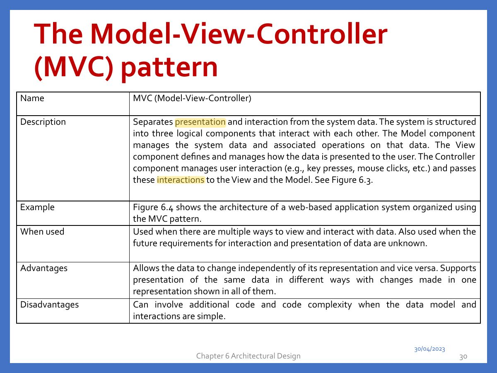
Exam weight ●●● High
- MVC: Model (data and logic), View (presentation), Controller (handles input, updates model). Lets one model have many views.
🎯 How this can come up · 1 question
MCQ
In MVC, the component that handles user input is the:
Correct: Controller.
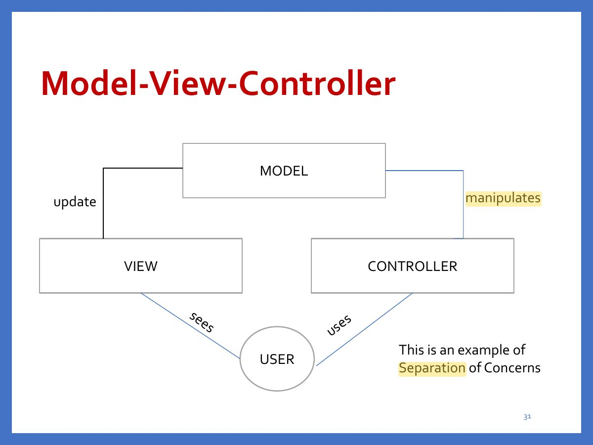
Exam weight ●○○ Low
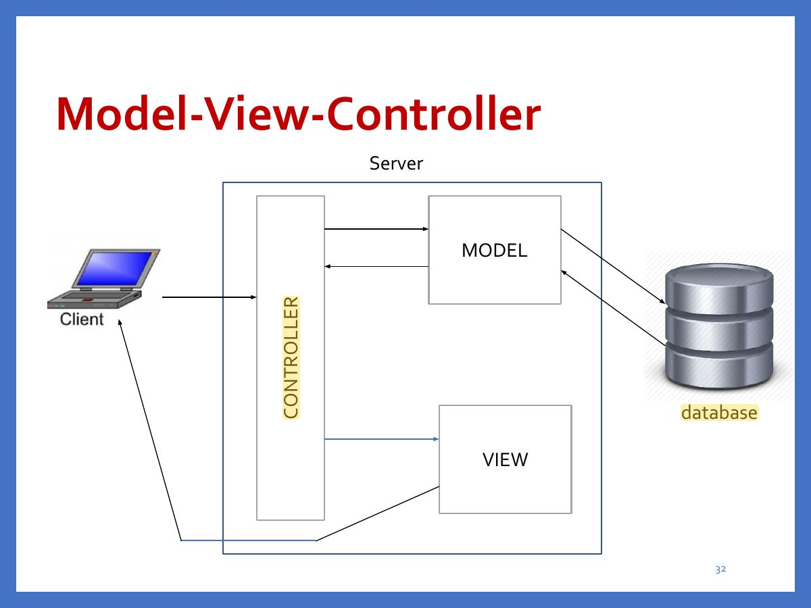
Exam weight ●○○ Low
Layered architecture
- Used to model the interfacing of sub-systems.
- Organises the system into a set of layers (or abstract machines) each of which provide a set of services.
- Supports the incremental development of sub-systems in different layers. When a layer interface changes, only the adjacent layer is affected. 30/04/2023 Chapter 6 Architectural Design
33
Exam weight ●○○ Low
- Layered: each layer uses only the layer below (UI → business logic → data). Easy to replace layers; performance overhead.
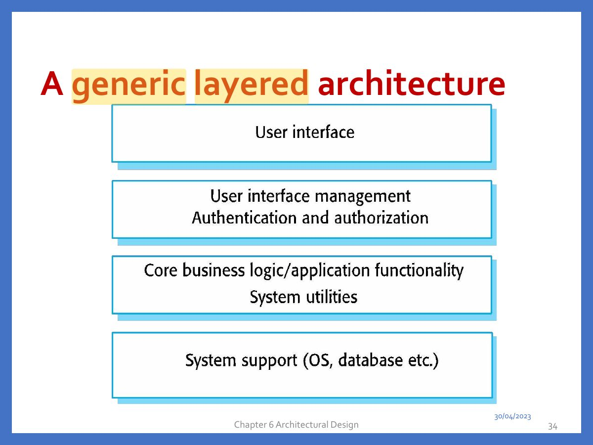
Exam weight ●○○ Low
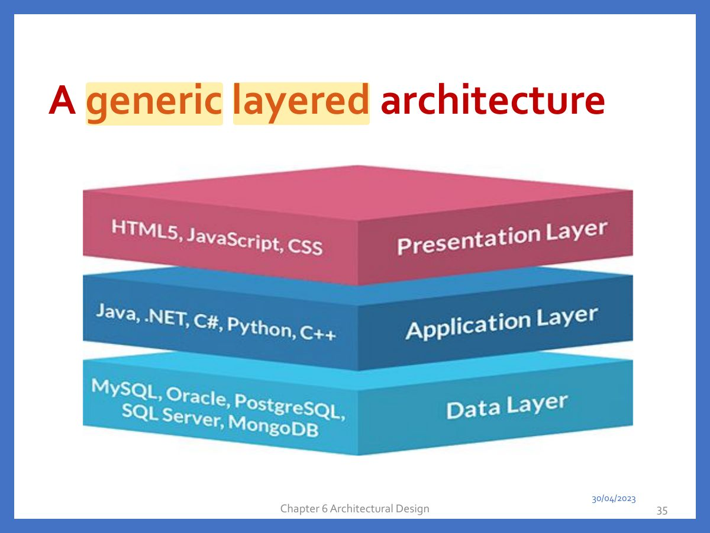
Exam weight ●○○ Low
Two Tier Client-Server Architecture
- In a Thin Client-2 Tier Architecture, client has only the presentation layer(user interface programs), where as Application(business /logic) and Data layer resides in the server. This means that the majority of the data processing takes place in the server. In Thin Client environments, Virtual Desktops are hosted in data centers.
- In a Fat Client-2 Tier Architecture, client has both the presentation layer and Application layer, where as Data layer resides in the server. This means that the most resources are locally installed
36
Exam weight ●○○ Low
- Client–server: services on servers, clients request them over a network.
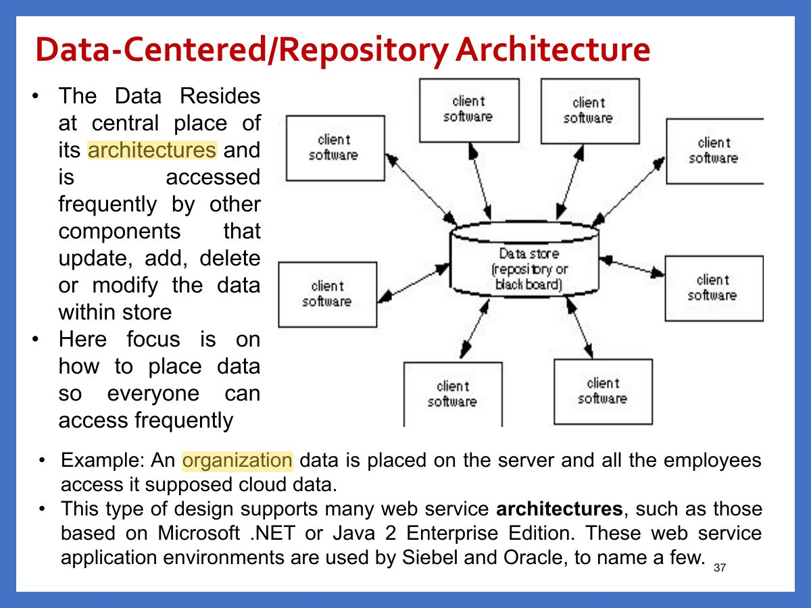
Exam weight ●○○ Low
- Repository: components share a central data store.
Data-Centered/Repository Architecture
- Has the goal of integrating the data
- Clients are relatively independent of each other so they can be added, removed, or changed in functionality
- The data store is independent of the clients.
- Use this style when a central issue is the storage, representation, management, and retrieval of a large amount of related persistent data
- Note that this style becomes client/server if the clients are modeled as independent processes
38
Exam weight ●○○ Low
Data-Centered/Repository
here
Architecture
- Sub-systems must exchange data. This may be done in two ways:
- Shared data is held in a central database or repository and may be accessed by all sub-systems;
- Each sub-system maintains its own database and passes data explicitly to other sub-systems.
- When large amounts of data are to be shared, the repository model of sharing is most commonly used as this is an efficient data sharing mechanism. 30/04/2023 Chapter 6 Architectural Design
39
Exam weight ●○○ Low
Data Flow/Pipe &Filter Architecture
- It focuses on how data is flowing in the system.
- This architecture is applied when the input data is converted into a series of manipulative components into output data.
- A pipe-and-filter pattern has a set of components, called filters, connected by pipes that transmit data from one component to the next.
- Each filter works independently of those components upstream and downstream, is designed to expect data input of a certain form, and produces data output (to the next filter) of a specified form. However, the filter does not require knowledge of the
- workings of its neighboring filters.
- If the data flow degenerates into a single line of transforms, it is termed batch sequential.
- This structure accepts a batch of data and then applies a series of sequential components (filters) to transform it.
40
Exam weight ●●● High
- Pipe and filter: data flows through a sequence of transformations (compilers, batch processing).
🎯 How this can come up · 1 question
MCQ
A compiler (lexer → parser → code generator) best fits which pattern?
Correct: Pipe and filter.
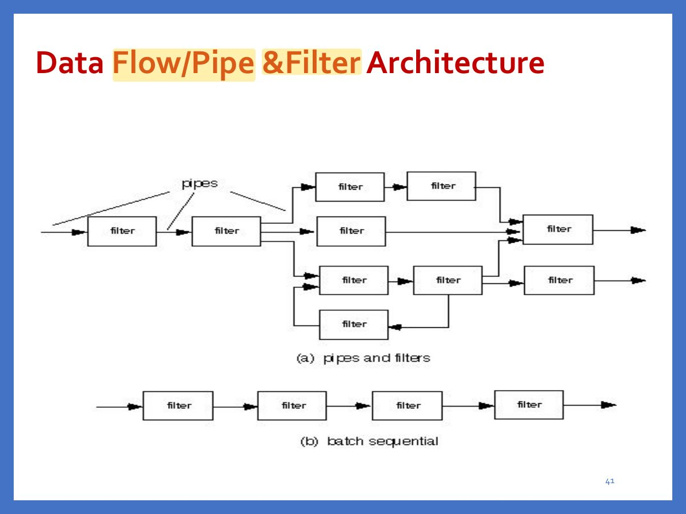
Exam weight ●○○ Low
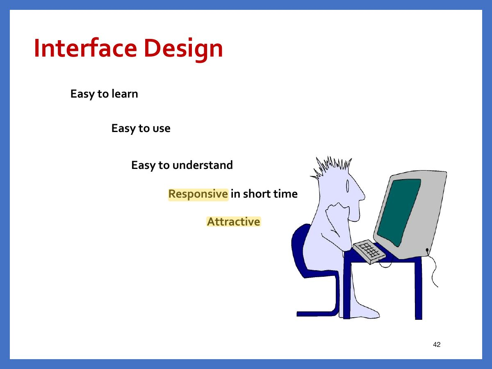
Exam weight ●○○ Low
Interface Design
- User Interface is the front end application with which user interacts in order to use the software functionalities.
- User can manipulate and control software and hardware by means of the user interface.
- We find user interface in all digital technologies e.g. computer, mobiles, cars, music player etc.
- It is a human-computer interface
- There are two categories of UI.
- Command Line Interface
- Graphical User Interface
43
Exam weight ●○○ Low
Design Issues
- Response time
- Help facilities
- Error handling
- Menu and command labeling
- Application accessibility
- Internationalization
44
Exam weight ●○○ Low
Golden Rules
- Place the user in control
- Define interaction in such a way that user is not force into performing unnecessary actions
- Provide friendly user interaction
- Hide technical internals from casual user.
- Reduce the user’s memory load
- Reduce demands on user short term memory
- Establish meaningful defaults
- Define shortcuts
- Make the interface consistent
- Maintain consistency across a family of applications.
- If past interactive models have created user expectations, do not make changes unless there is a compelling reason to do so.
45
Exam weight ●●● High
- Golden rules (Mandel): place the user in control, reduce the user’s memory load, make the interface consistent.
🎯 How this can come up · 1 question
MCQ
Which is one of Mandel’s golden rules?
Correct: Reduce the user’s memory load.
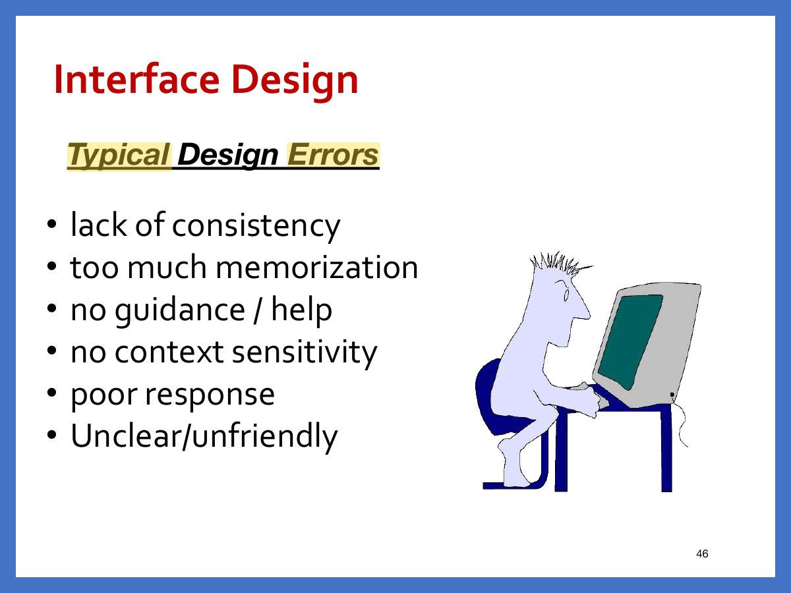
Exam weight ●○○ Low
Interface Analysis
- A key principle of all software engineering process models is: understand the problem before you attempt to design a solution.
- Interface analysis means understanding
- (1) the people (end-users) who will interact with the system through the interface;
- (2) the tasks that end-users must perform to do their work,
- (3) the content that is presented as part of the interface
- (4) the environment in which these tasks will be conducted.
47
Exam weight ●○○ Low
WebApp Interface Design
- In order to design a WebApp interface so that it answers three primary questions for the end user:
- Where am I? The interface should
- provide an indication of the WebApp that has been accessed
- inform the user of her location in the content hierarchy.
- What can I do now ? The interface should always help the user understand his current options
- what functions are available?(e.g. sub menu)
- what links are live? (e.g. enables or disabled)
- what content is relevant?
- Where have I been, where am I going? The interface must facilitate navigation.
- Provide a “map” (implemented in a way that is easy to understand) of where the user has been and what paths may be taken to move elsewhere within the WebApp.
48
Exam weight ●○○ Low
Effective WebApp Interfaces
- Bruce Tognozzi [TOG01] suggests...
- Effective interfaces are visually apparent and forgiving, instilling in their users a sense of control.
- Effective interfaces do not concern the user with the inner workings of the system. Work is carefully and continuously saved, with full option for the user to undo any activity at any time.
- Effective applications and services perform a maximum of work, while requiring a minimum of information from users.
49
Exam weight ●○○ Low
References
- These slides are designed to accompany Software Engineering: A Practitioner’s Approach, 8/e (McGraw-Hill, 2014) Slides copyright 2014 by Roger Pressman.
50
Exam weight ●○○ Low
No slides match this filter.